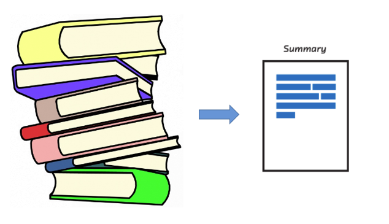
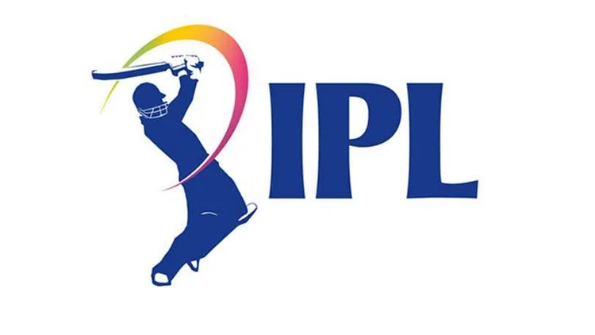

PROJECTS
Scania Sensor Fault Detection
The Air Pressure System (APS) is a critical component of a heavy-duty vehicle that uses compressed air to force a piston to provide pressure to the brake pads, slowing the vehicle down. The benefits of using an APS instead of a hydraulic system are the easy availability and long-term sustainability of natural air.
This is a Binary Classification problem, in which the affirmative class indicates that the failure was caused by a certain component of the APS, while the negative class indicates that the failure was caused by something else. View here
Application Tracking System (ATS)

The Resume Matcher is a Python-based project designed to match job descriptions with candidate resumes using natural language processing techniques. This tool aids in identifying the most suitable candidates for specific job roles by calculating the similarity between job descriptions and candidate resumes. View here
Building Large Language Model from Scratch with our own custom data (Ongoing)

I possess expertise in the development of large language models from the ground up, utilizing custom data to achieve highly specialized language capabilities. This hands-on experience involved the meticulous design and implementation of neural network architectures, fine-tuning procedures, and data preprocessing pipelines. I successfully created a robust language model that not only met specific domain requirements but also exhibited superior performance in understanding and generating human-like text. This achievement demonstrates my proficiency in the field of natural language processing and underscores my ability to tackle complex AI projects from conception to deployment.
MLFast

I am the creator of MLFast, a cutting-edge Python machine learning package that is built on top of scikit-learn. MLFast offers a user-friendly and streamlined API for regression and classification modeling, making the process of building and deploying machine learning models remarkably simple and efficient. My innovation and dedication to advancing the field of machine learning have resulted in the development of MLFast, which empowers users to harness the power of scikit-learn with ease. This achievement demonstrates my expertise in machine learning and my commitment to providing practical solutions to complex data science challenges.View here
DLFast
I am the proud creator of DLFast. DLFast is a Python deep learning library that's revolutionizing the way we build neural networks. Designed for both beginners and experienced data scientists, dlfast empowers users to create intricate deep learning models effortlessly. With its intuitive API and high-level abstractions, you can construct complex networks with just a few lines of code. The library offers modularity, efficiency, and extensive documentation, making it a powerful tool for anyone looking to harness the potential of deep learning. View here
LLMFast

I am the proud creator of LLMFast. LLMFast is your go-to Python library for simplifying the development of Large Language Model (LLM) applications. With just a few lines of code, you can harness the power of LLMs, saving you time and reducing complexity. Our library offers effortless integration, minimal coding requirements, and full customization to meet your unique needs. It's designed for optimized performance, ensuring smooth application execution, even with extensive language model usage. Explore our comprehensive documentation and examples to kickstart your LLM application development journey with ease. Unlock the potential of LLMs today with llmfast! View here
FastAnalytic (Ongoing)
I am the proud creator of FastAnalytics, a pioneering Python data analysis and manipulation library that is built on top of Pandas. Through my vision and expertise, I conceived and developed FastAnalytics, revolutionizing the field of data analysis. FastAnalytics empowers users to effortlessly perform comprehensive data analysis tasks with just one line of code, simplifying complex data manipulation processes. My role as the creator of this library has allowed me to demonstrate my deep understanding of Python programming and data analysis, as well as my ability to innovate and provide practical solutions to data-related challenges..
Text Summarization using HuggingFace
I possess a strong proficiency in Natural Language Processing (NLP) and have hands-on experience in text summarization using state-of-the-art techniques, particularly leveraging the Hugging Face Transformers library. In my previous roles, I have successfully implemented and fine-tuned transformer-based models to generate concise and coherent summaries from lengthy documents and articles. This expertise in text summarization not only demonstrates my advanced NLP skills but also showcases my ability to extract valuable insights and enhance information retrieval systems, making me a valuable asset in the field of machine learning and data science. View here
Myntra Fashion Product Recommender System
One of the major challenges faced by e-commerce companies like Myntra is to recommend the right products to their customers. With the growing number of products and increasing customer preferences, it becomes difficult to manually recommend products to each customer..
To solve this problem, a Myntra Fashion Product Recommender System for Women can be built using data science techniques. The system can recommend products to the customers based on their past purchase history, browsing behavior, and preferences. Additionally, image recognition techniques can be used to recommend products based on the customer's uploaded image.View here
SpaceX Falcon 9 Landing Prediction
The main goal of this project is to predict whether the Falcon 9 first stage will land successfully. SpaceX prides itself in being able to reuse the first stage of a rocket launch so much so that they advertise on their website that their rocket launches cost 62 million while other providers cost upward 165 million. Much of these savings are down to the first stage's reusability. If we can determine if the first stage will land, we can determine the cost of a launch. This information can be used if an alternate company wants to bid against SpaceX for a rocket launch.View here
British Airways
The Air Pressure System (APS) is a critical component of a heavy-duty vehicle that uses compressed air to force a piston to provide pressure to the brake pads, slowing the vehicle down. The benefits of using an APS instead of a hydraulic system are the easy availability and long-term sustainability of natural air.
British Airways (BA) is the flag carrier airline of the United Kingdom (UK). Every day, thousands of BA flights arrive to and depart from the UK, carrying customers across the world. Whether it’s for holidays, work or any other reason, the end-to-end process of scheduling, planning, boarding, fuelling, transporting, landing, and continuously running flights on time, efficiently and with top-class customer service is a huge task with many highly important responsibilities. View here
Insurance Premium Prediction
The purpose of this data is to look into the different features to observe their relationship, ML model based on several features of individual such as age, physical/family condition and location against their existing medical expense to be used for predicting future medical expenses of individuals that help medical insurance to make decision on charging the premium. View here
Heart Disease Diagnostics Analysis

This dataset contains details of the age,BP,cholestrol and about having heart disease or not.Using the attributes in the dataset we can predict heart diseae risk for an individual and identify the risk factors.
Health is real wealth in the pandemic time we all realized the brute effects of covid-19 on all irrespective of any status. You are required to analyze this health and medical data for better future preparation. View here
Customer Personality Analysis

Customer Personality Analysis is a detailed analysis of a company’s ideal customers. It helps a business to better understand its customers and makes it easier for them to modify products according to the specific needs, behaviors and concerns of different types of customers. Customer personality analysis helps a business to modify its product based on its target customers from different types of customer segments. For example, instead of spending money to market a new product to every customer in the company’s database, a company can analyze which customer segment is most likely to buy the product and then market the product only on that particular segment.View here
Credit Card Default Prediction
Financial threats are displaying a trend about the credit risk of commercial banks as the incredible improvement in the financial industry has arisen. In this way, one of the biggest threats faces by commercial banks is the risk prediction of credit clients. The goal is to predict the probability of credit default based on credit card owner's characteristics and payment history.
The classical machine learning tasks like Data Exploration, Data Cleaning, Feature Engineering, Model Building and Model Testing. Try out different machine learning algorithms that’s best fit for the above case. View here
Student Performance Indicator
Predicting students’ performance is very important in matters related to higher education as well as with regard to deep learning and its relationship to educational data. Prediction of students’ performance provides support in selecting courses and designing appropriate future study plans for students.
In addition to predicting the performance of students, it helps teachers and managers to monitor students in order to provide support to them and to integrate the training programs to obtain the best results.View here
Regex Clone

A regular expression is a sequence of characters that specifies a match pattern in text. Usually such patterns are used by string-searching algorithms for "find" or "find and replace" operations on strings, or for input validation.
This Flask app clones the core functionality of regex101.com. It matches a text string with a regex and display all the matches. Built with Flask and Python's Regular Expression module, it provides a simple and efficient way to test Regular Expressions. View here
Google Playstore Apps Analysis & Visualization
In this project, you will be working on a real-world dataset of the google play store, one of the most used applications for downloading android apps. This project aims on cleaning the dataset, analyze the given dataset, and mining informational quality insights. This project also involves visualizing the data to better and easily understand trends and different categories.
This project will help you understand how a real-world database is analyzed using SQL, how to get maximum available insights from the dataset, pre-process the data using python for a better upcoming performance, how a structured query language helps us retrieve useful information from the database, and visualize the data with the power bi tool. View here
The Story of IPL 2008 - 2019
The Indian Premier League is a men's T20 franchise cricket league in India. It is annually contested by ten teams based in seven cities and three states.
Objective of the Task is to Perform EDA on 'Indian Premier League' Dataset. As a Sports Analysts, Find out the Most Successful Teams, Players and Factors Contributing Win or Loss of a Team. View here
COVID-19 Dashboard

Coronavirus disease 2019 (COVID-19) is a contagious disease caused by a virus, the severe acute respiratory syndrome coronavirus 2 (SARS-CoV-2). The first known case was identified in Wuhan, China, in December 2019. The disease quickly spread worldwide, resulting in the COVID-19 pandemic.
Dashboard presents official daily counts of COVID-19 cases, deaths and vaccine utilisation reported by countries, territories and areas. Through this dashboard. View here